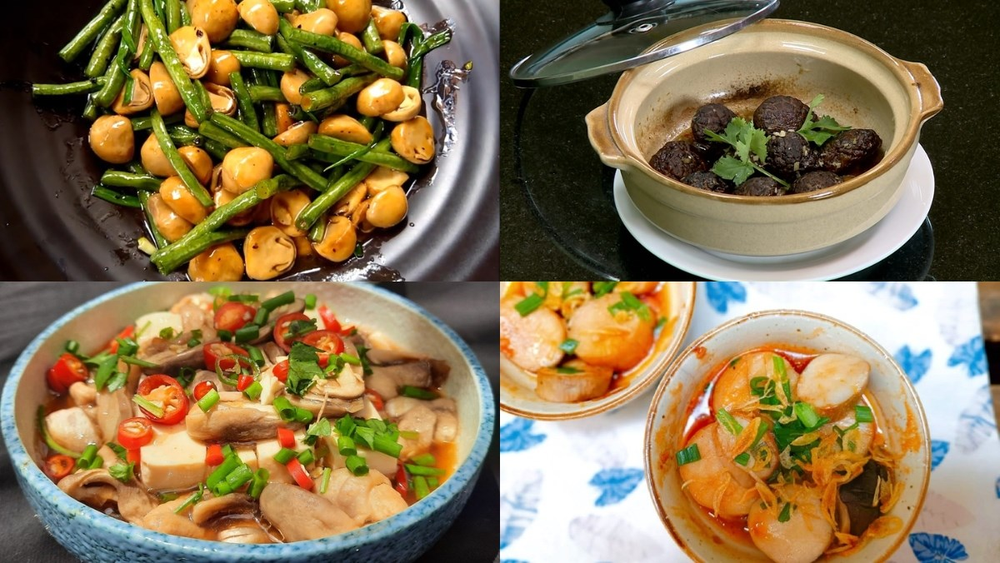
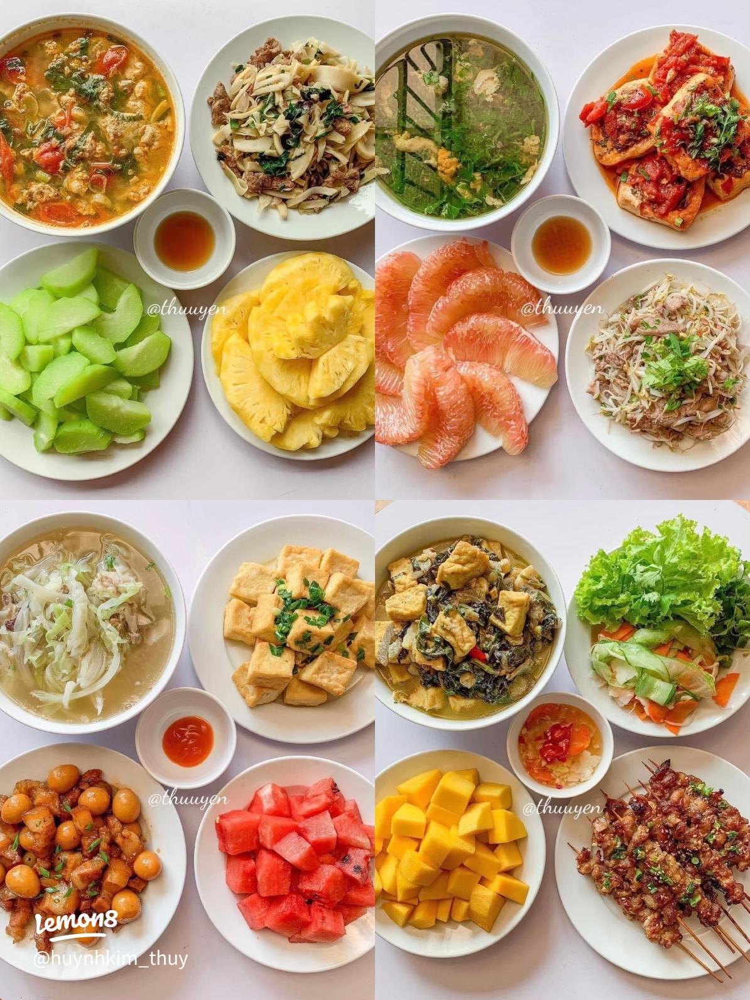
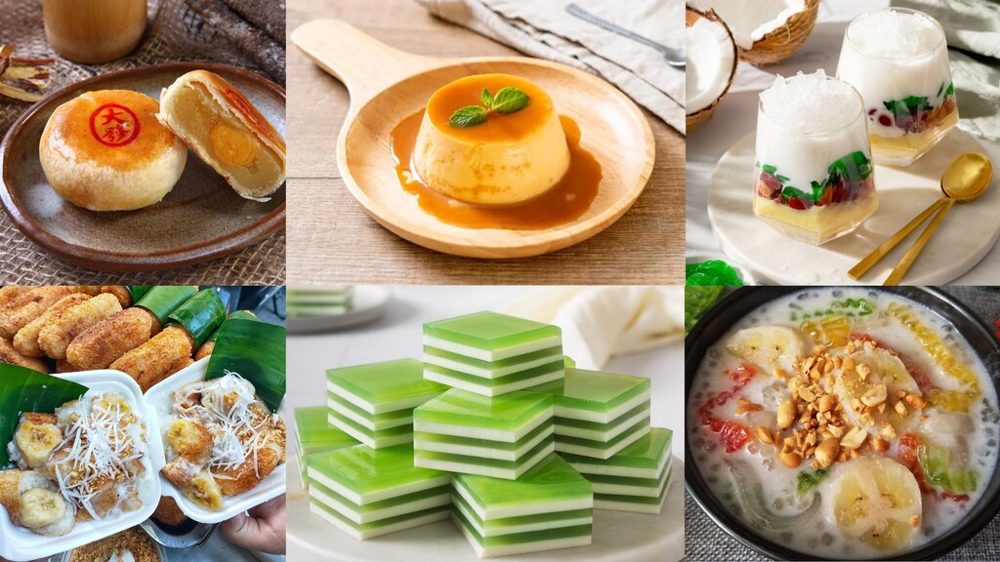
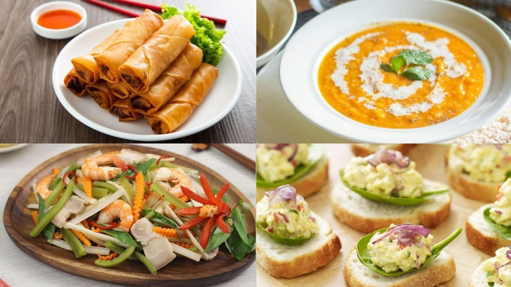

Tại đây, bạn sẽ khám phá những công thức nấu ăn ngon, dễ làm và phù hợp cho mọi gia đình. Từ những món ăn truyền thống quen thuộc đến các món hiện đại hấp dẫn, chúng tôi mang đến hướng dẫn chi tiết từng bước giúp bạn tự tin vào bếp mỗi ngày. Dù bạn là người mới bắt đầu hay đã có kinh nghiệm, website sẽ là người bạn đồng hành giúp bữa ăn của bạn thêm phong phú, trọn vị và đầy yêu thương.



